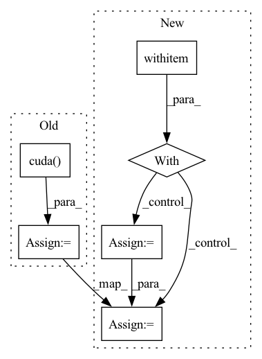

Pattern ID :20137

Before Change
threads = k * queries_per_block
blocks = ((L*k)//threads) + C + 1
query_map = torch.ones((N, H, blocks), dtype=torch.int32).cuda() * L
blocks_map = torch.ones((N, H, blocks), dtype=torch.int32).cuda() * -1
_, sorted_group_indices = torch.sort(groups, descending=True, dim=-1)
// Actually perform the dot product
After Change
else:
// Allocate bookkeeping parameters to facilitate the kernel
with torch.no_grad():
Q_pb = 16
block_counts = (counts + Q_pb - 1) // Q_pb
block_counts = block_counts.int()
block_counts_cumsum = block_counts.view(-1).cumsum(-1).view(N, H, C).int()
indx_maps = torch.ones(
(block_counts.sum(), 4),
device=Q.device,
dtype=torch.int32
In pattern: SUPERPATTERN
Frequency: 3
Non-data size: 6
Instances
Fragment ID: 65854990
Project Name: idiap/fast-transformers
Commit Name: ac1fd6316f59b56faa3b4e9236810d4e97ed5b15
Time: 2020-11-25
Author: avyas@idiap.ch
File Name: fast_transformers/sparse_product/__init__.py
M Class Name: ClusteredSparseDotProduct
N Class Name: ClusteredSparseDotProduct
M Method Name: forward(7)
N Method Name: forward(7)
M Parent Class: torch.autograd.Function
N Parent Class: torch.autograd.Function
M File Name: fast_transformers/sparse_product/__init__.py
N File Name: fast_transformers/sparse_product/__init__.py
M Start Line: 185
M End Line: 201
N Start Line: 164
N End Line: 208
'>
Before Change
noise = torch.randn((batch_size, 100))
if cuda:
noise = noise.cuda(local_rank)
G_result = G_model_train(noise)
D_result = D_model_train(G_result)
D_fake_loss = BCE_loss(D_result, y_fake)
D_loss = (D_real_loss + D_fake_loss) * 0.5
After Change
//----------------------//
scaler.scale(D_real_loss).backward()
with autocast():
G_result = G_model_train(noise_1)
D_result = D_model_train(G_result)
D_fake_loss = BCE_loss(D_result, y_fake)
//----------------------//
// 反向传播
'>
Fragment ID: 65855006
Project Name: bubbliiiing/dcgan-pytorch
Commit Name: cdd6a27591afafb4f346acbea338b6e49c4333a8
Time: 2022-07-07
Author: 3323290568@qq.com
File Name: utils/utils_fit.py
M Class Name: AnonimousClass
N Class Name: AnonimousClass
M Method Name: fit_one_epoch(19)
N Method Name: fit_one_epoch(19)
M Parent Class:
N Parent Class:
M File Name: utils/utils_fit.py
N File Name: utils/utils_fit.py
M Start Line: 21
M End Line: 119
N Start Line: 25
N End Line: 114
'>
Before Change
photo = np.array(crop_img,dtype = np.float64)
// 图片预处理，归一化
photo = Variable(torch.from_numpy(np.expand_dims(np.transpose(crop_img-MEANS,(2,0,1)),0)).cuda().type(torch.FloatTensor))
preds = self.net(photo)
top_conf = []
top_label = []
After Change
photo = np.array(crop_img,dtype = np.float64)
// 图片预处理，归一化
photo = Variable(torch.from_numpy(np.expand_dims(np.transpose(crop_img-MEANS,(2,0,1)),0)).type(torch.FloatTensor))
with torch.no_grad():
if self.cuda:
photo = photo.cuda()
preds = self.net(photo)
top_conf = []
top_label = []
'>
Fragment ID: 65855010
Project Name: bubbliiiing/ssd-pytorch
Commit Name: ccb1ac0bf56f9eac07d1a8536341f8b2eb8c0f66
Time: 2020-05-24
Author: 47347516+bubbliiiing@users.noreply.github.com
File Name: ssd.py
M Class Name: SSD
N Class Name: SSD
M Method Name: detect_image(2)
N Method Name: detect_image(2)
M Parent Class: object
N Parent Class: object
M File Name: ssd.py
N File Name: ssd.py
M Start Line: 82
M End Line: 83
N Start Line: 82
N End Line: 88